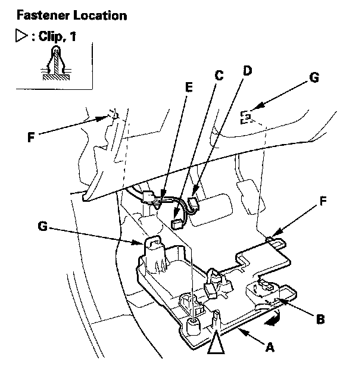

Driver's Dashboard Under Cover
Driver's Dashboard Undercover Removal/InstallationSpecial Tools Required
KTC trim tool set SOJATP2014 *
* Available through the American Honda Tool and Equipment Program
NOTE:
- Use the appropriate tool from the KTC trim tool set to avoid damage when removing components.
- Take care not to scratch the dashboard and its related parts.

1. Remove the driver's dashboard undercover (A).
1. Turn the lock knob (B) 90 °.
2. Gently pull down the rear edge to detach the clip.
3. Disconnect the footwell light connector (C) and ambient light connector (D), then detach the harness clip (E).
4. Pull the undercover away to release the pins (F) from the holders (G).
2. Install the undercover in the reverse order of removal, and note these items:
- Replace the clip if it's damaged.
- Push the clip into place securely.
- Make sure that each connector is plugged in properly.
- Make sure the pins on of the cover are securely seated.